Low Points on hydrant lines facilitate the removal of water and sediment
All Low Points of the hydrant shall be flushed at a high velocity thoroughly once a week, with the line under pressure until a sample free from visible water and particulate is obtained.
Quantity flushed shall be 50 to 200 litres more than the capacity of the sampling pipework
After flushing an amount in excess of the sampling pipework, a line sample shall be drawn during flow for a Visual Appearance Check
Additional checks on the cleanliness of the fuel in the hydrant, including weekly or more frequent low point flushing, shall be made during and immediately after hydrant system maintenance or extensions have been completed
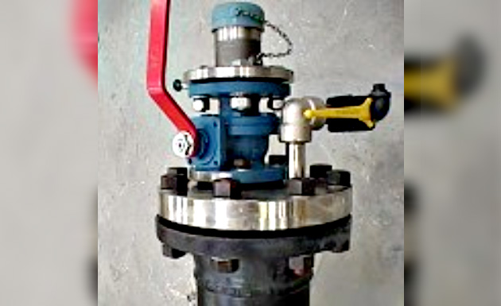
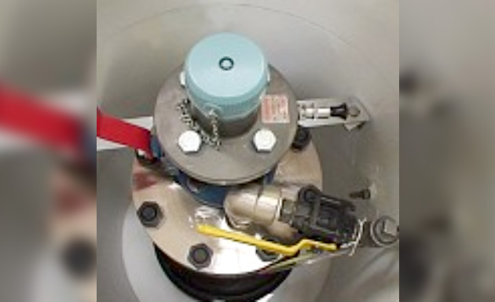
Flushing this line routinely removes particulate and free water from the main hydrant line
The benefits for fuel quality are obvious, but water removal also significantly reduces any internal corrosion and deterioration of the pipeline
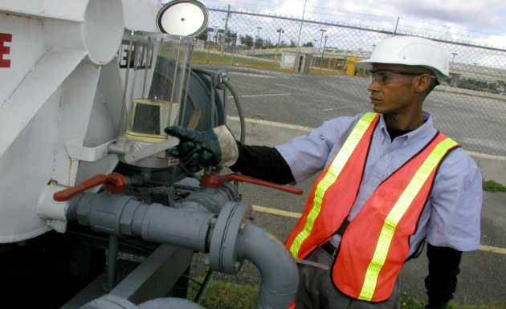
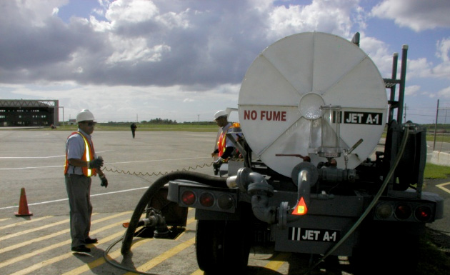
The test is designed to ensure particulates and water are safely flushed from the hydrant system, and that the resultant clean dry system is confirmed through Visual Testing of samples.
The flush shall be 200 litres in hydrant lines at major airports.
Smaller quantities (at least 50 litres) may be sufficient in some systems, provided the system remains clean and free of water.
The quantity flushed shall be sufficient to ensure all riser pipes and other parts of the sampling system are cleared before taking a running sample for a Visual Appearance Check.
More frequent flushing may be required in some hydrant systems depending on historical results and will always be required for a while after any engineering work on the hydrant line.
If unusual flushing is required in order to obtain a clear sample, supervisors should be notified immediately and upstream causes investigated.
Test Procedure
Position vehicle or trailer tank alongside the Low Point and deploy high visibility cones to delineate the work area.
Check that the vessel has sufficient capacity to receive the intended flushing volumes.
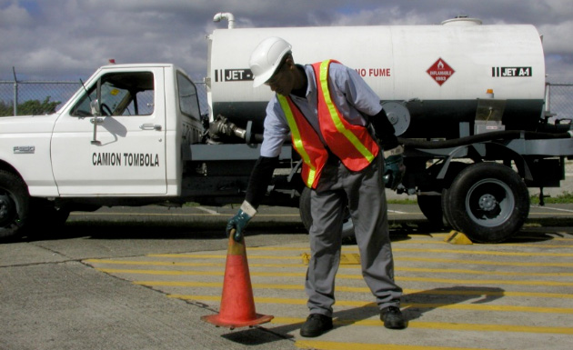
Connect the bonding cable to the sampling piping.
Note: in the event the Low Point (LP) is located in a deep pit chamber, it will be preferable to have a length of bonding cable permanently connected to the piping which can be raised out of the chamber vapor space into open air prior to attaching the bonding lead to it.
Connect the LP flushing hose.
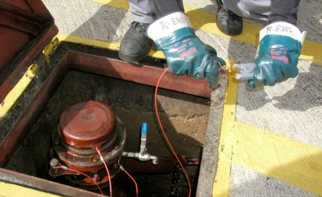
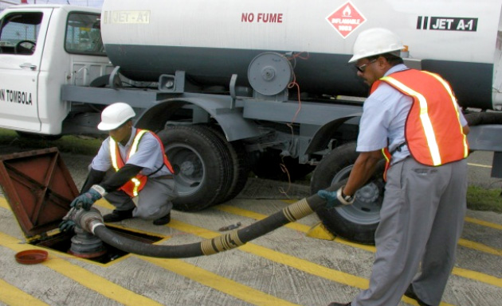
Open the control valves to commence flushing from the LP to the vessel. Monitor the filling by observing the level rise on the sight glass.
When 200 litres have been flushed, draw a running sample from the sample point.
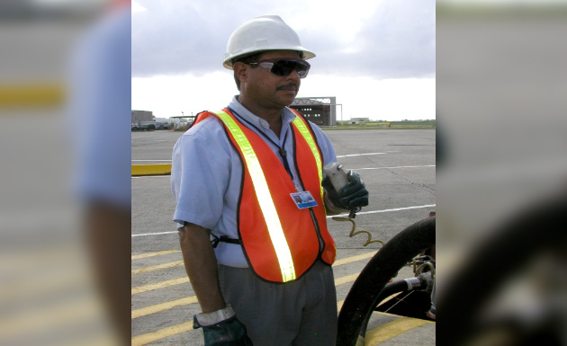
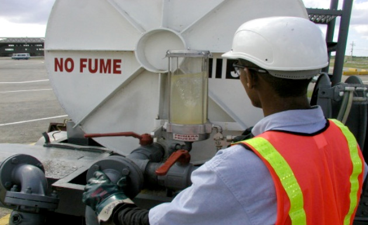
Stop flushing, and subject the sample to a Visual Appearance Check (includes water detection using CWD ).
If the Visual Appearance Check passes, the flushing is finished and wrap-up can commence.
If the check fails, recommence flushing and repeat sampling until all contaminants are removed.
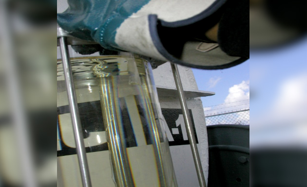
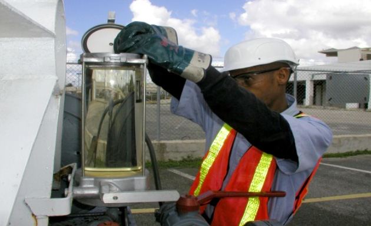
Unusual observations and Visual Appearance Check failures must be brought to the attention of supervisors for investigation.
Ensure valves are closed, disconnect the hose and stow it on the LP unit. Disconnect and stow bonding cable, replace dust caps, close the pit box lid, and recover high visibility cones.
Record the details of the flush on the Water Check Record.
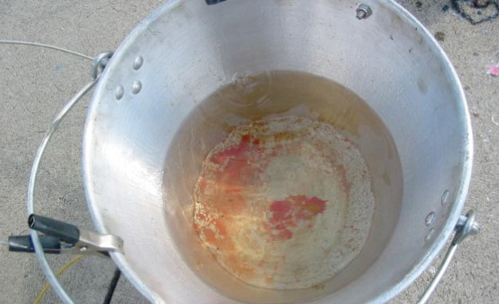
Requirements for Satisfactory Test:
Sufficient quantity is drawn to ensure total LP line contents to main pipe are flushed.
Samples are Clear, Bright, and Dry per Visual Check.